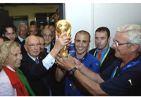

футбол

Футбол-командный вид спорта, в котором целью является забить мяч в ворота соперника
ногами или другими частями тела(кроме рук)болшее количество раз,
чем команда соперника.
Есть 17 официальных правил игры, каждое из которых сожержит список оговорок и руководящих
принципов.Эти правила предназначены для применения на всех уровнях футбола, хотя есть
некоторые изменения для таких групп , как юниоры, взрослые, женщины и люди с
ограниченными физическими возможностями.Законы очень часто формировались в общих
чертах , которые позволяют упростить их применения в зависимости от характера игры.